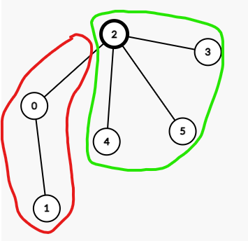
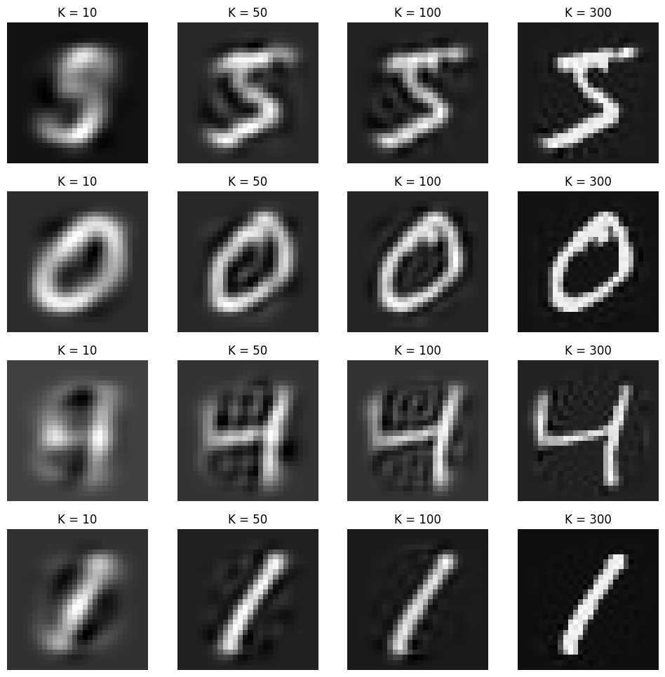

Welcome to My Blog!
Since I already have a website specifically for blogs, I will use here to advertise my actual blog website! I occasionally write about life, AI, math, and my personal research. You can check out my main blog page below:
Specific Blogs that I'm proud of
- Reroot DP
- Linear Algebra in ML: PCA
- 2024 Summer REU Experience
In this blog, I talk about a specific type of Dynamic Programming (DP) on trees, where the question wants a answer that would require making each node as the root of the tree.
In this blog, I talk about a classical dimension reduction technique known as Principal Component Analysis (PCA). I write about how this technique works in a linear algebra perspective and give a step by step coding tutorial.
In this blog, I write about my 2024 summer research internship at UW Eau-Claire.